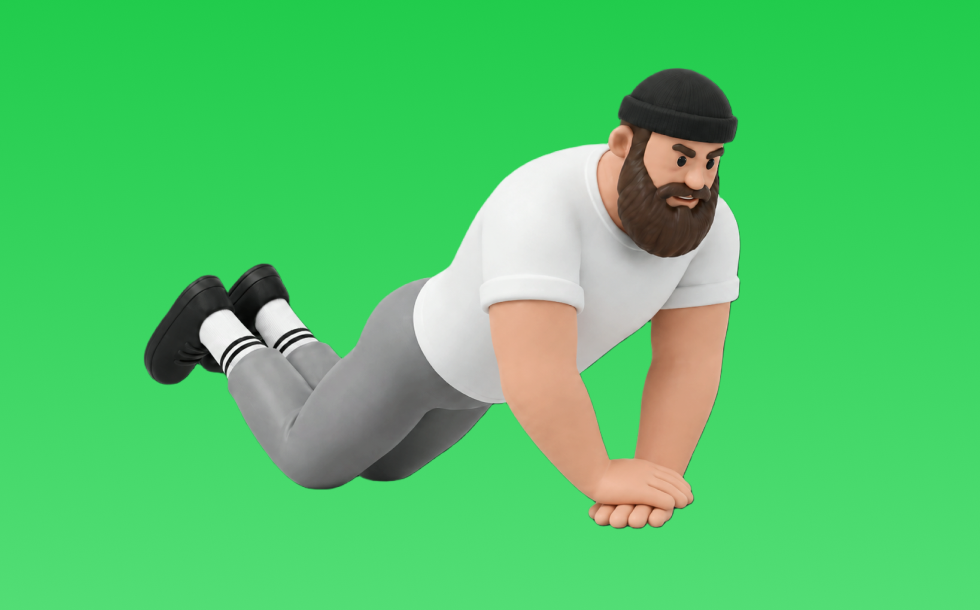

ダイヤモンドプッシュアップ

ダイヤモンドプッシュアップとは、自重を使って「押す」動作で腕（上腕三頭筋）を鍛える種目です。器具なしで手軽にでき、フォーム次第で負荷調整しやすいのが特徴で、体を一直線に保ち、胸を床へ近づけて押し上げる動作を繰り返します。二の腕の厚みづくりやプレス系の補強が期待できます。
- 対象部位
- 腕
- 器具
- 自重
- 記録形式
- 回数
- 別名
- ダイヤモンド腕立て
YouTube動画
-
【自宅筋トレ】なかやまきんに君の正しい腕立て伏せを学ぼう。
-
間違いだらけの腕立て伏せ。大胸筋に効かせるやり方！プッシュアップの正しい方法【60歳以上の筋トレ】【ムネアツおやじ】
-
最強自重トレーニング！バッチバッチに胸に効く正しいフォーム教えます
-
ダイヤモンドプッシュアップの正しいやり方【初心者でも胸に効く】
-
【腕立て伏せ解説】正しいフォームと大胸筋に効かせるポイント！
-
【ダイヤモンドプッシュアップ】肘・手首を痛めずに二の腕に効かせるコツを解説！
-
腕立て伏せでよくある間違い7つ｜正しいフォームについて解説！
-
【腕立て伏せ】5つのポイント解説 | 初心者〜女性できるようになる！
-
【腕立て伏せ100回】大胸筋・上腕三頭筋・三角筋を強化する8分間9種目！
-
【徹底解説】腕立て伏せの正しいフォーム・NG例【家トレ】
-
【腕立て伏せ】ダイヤモンドプッシュアップを限界までやったらどんな胸になるのか検証しました
-
間違いだらけの腕立て伏せ。あなたは大丈夫？大胸筋に効かせるやり方ちゃんと出来てますか？プッシュアップの正しい方法 Push Ups
-
【筋トレ】たった3分で必ず大胸筋がデカくなるメニュー【入門編】
YouTubeショート
-
【腕立てが胸に効かない人！】すぐに解決できます！ #腕立て #筋トレ初心者 #大胸筋
-
【ちょー分かりやすい】正しい腕立て伏せのやり方 #腕立て伏せ #筋トレ初心者
-
二の腕痩せ、バストアップの効果凄い！初心者必見！腕立て伏せのやり方！出来ない人も出来るようになる！#腕立て伏せ
-
【正しい腕立て伏せ】あなたの腕立て伏せは間違っています #shorts
-
【初心者必見】腕立て伏せ最短習得ステップ #筋トレ #腕立て伏せ #筋トレ初心者
-
腕立て伏せの一番大事ポイント#shorts
-
【大胸筋に効きすぎる】おすすめ腕立て3種目 #筋トレ #胸トレ #腕立て伏せ
-
【正しいdiamond push-up🏠】#筋トレ #自宅トレーニング #家トレーニング #自重トレーニング #自重 #腕立て伏せ #筋トレ初心者 #筋肉 #増量 #体重
-
腕立てができない人これやって #自重トレーニング
-
【やらなきゃ損な万能種目】パイクプッシュアップの習得ステップ #筋トレ #肩トレ #腕立て伏せ
-
この3つやってますか？？【自重で最強の胸筋の鍛え方】#腕立て伏せ
-
腕立て伏せを大胸筋に効かせるやり方 -ダイエット12日目- #shorts
-
【山本義徳】ベンチプレスより腕立て伏せが効果的な理由はこれです【切り抜き】
-
軍隊プッシュアップ・チャレンジ【Part2】🔥⚔️あなたはどこまで行けるかな？？👀...#カリステニクス#キャリステニクス#自重トレーニング#自重トレ #自重#プッシュアップ#腕立て伏せ
-
腕立て伏せ1,000回に挑戦した結果 【世界の筋肉】
-
【自重トレのみ！】腕立てで作り上げたデカすぎる大胸筋 #筋トレ
-
【検証】腕立て伏せ2000回した結果がヤバいでしょ！
-
プッシュアップバーで腕立てがこんなに変わる！
-
✅正しい腕立て伏せのやり方/Push-up form correction #鈴木美煌 #腕立て #筋トレ #gym #motivation
-
初心者が一番最初にマスターするべきバリエーション4つ✅腕立て伏せは手の位置で鍛え方変えれます！てか久々にやってみたらやっぱこの音好き🫶 #筋トレ #腕立て伏せ #自重トレーニング
-
自重のみでデカくなるトレーニーの公園胸トレ【腕立て伏せ】【ディップス】
-
腕立てで手首が痛くなる人必見！ #shorts
-
腕立て伏せだけで胸肩３頭鍛える。
動作方法
- 安定した姿勢を作り、肩と体幹を固定する
- 狙う部位を意識して、反動を使わずに押す
- 可動域を保ちながら、ゆっくり元に戻す
動作ポイント
- 肩をすくめない
- 手首を寝かせすぎない
- 反動を使いすぎない
ワンポイントアドバイス
- 肘の位置を固定すると狙った部位に効きやすい
- 回数を急がず、下ろし動作を丁寧に行う
目的別回数設定
目的や体力に応じた一般的な目安です。無理のない範囲で調整してください。
- 筋力アップ
- 1〜5回
- 筋肥大
- 6〜12回
- 持久力アップ
- 13〜20回
YouTube動画について
動画はYouTubeの公開情報をもとに表示しています。内容は投稿者によるもので、Biggrによる監修ではありません。
アプリを入手
筋トレやトレーニングの記録はBiggrにお任せください。今すぐ無料で使い始められます。